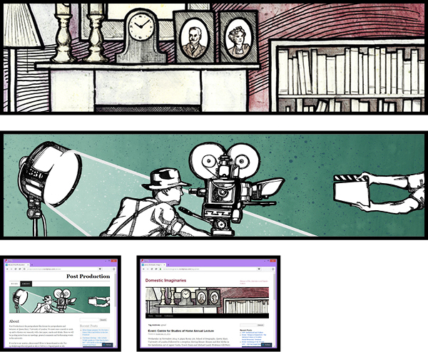

My work includes comics, poster and magazine art, and illustration for packaging. To download a high resolution PDF copy of my portfolio (7.8MB) click here.


|  |
Domestic Imaginaries and Post Production
I was tasked with producing banner graphics the film studies department at Queen Mary, University of London. Domestic Imaginaries is a study group focused on representations of the home in British cinema; I created an image of a typical 1940s living room and filled it with oridinary yet meaningful objects which could tell a story about their owners and the era they lived in.
|